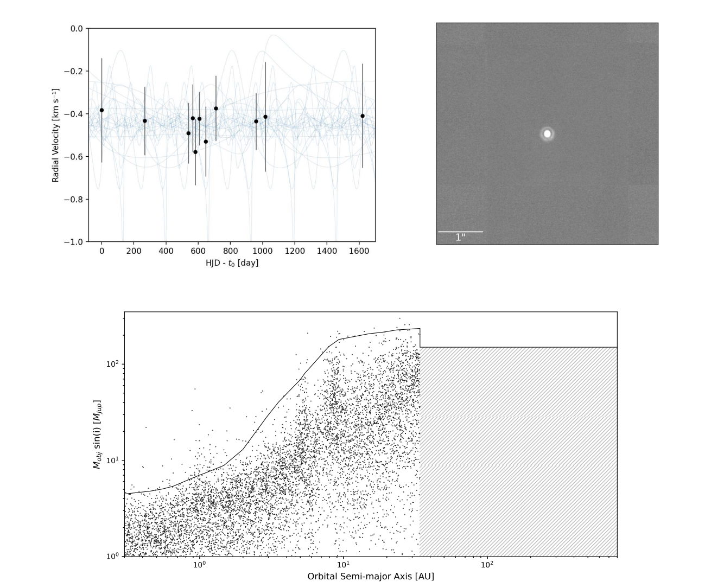

Planetary Systems • Infrared Spectroscopy • Circumstellar Dust
What Produces the Extreme, Featureless Dust Emission of V488 Per?
One of the dustiest known main-sequence stars lacks both the mid-infrared spectral features expected from a debris disk and evidence for a companion that could explain its unusual architecture.
An exceptionally dusty young planetary system
V488 Per has one of the largest infrared excesses known around a main-sequence star, indicating enormous amounts of circumstellar dust. Such extreme emission is often interpreted as evidence for recent collisions among planetary bodies, but the dust spectrum and system architecture can reveal what kind of event occurred.
I combined infrared spectroscopy, far-infrared measurements, high-resolution imaging, and radial-velocity monitoring to test both the composition of the dust and whether an unseen companion might be responsible for the system's unusual properties.
A warm component without the expected spectral features
The system contains both a cold outer dust belt and a much warmer component at roughly 800 K. Unlike many debris disks, however, the warm mid-infrared spectrum shows no strong solid-state emission features.
This featureless spectrum may indicate unusually large grains or a composition dominated by materials such as amorphous carbon or metallic iron. Such compositions could be associated with energetic collisions in the inner planetary system, potentially involving differentiated, Mercury-like material.


No companion explains the excess
High-resolution imaging detects no nearby stellar or substellar companion, while radial-velocity monitoring rules out a broad range of closer companions. These non-detections remove one of the leading external explanations for the extreme dust production.
The observations therefore point back to processes within the planetary system itself: major collisions, unusual grain properties, or a distinctive inner-system architecture.
Why this project remains part of my research story
This early work established the same approach that now shapes my black hole research: combine spectroscopy with multiwavelength constraints to identify the physical process behind an unusual, potentially short-lived state. V488 Per demonstrates how transitional systems can expose events that are invisible in stable, mature populations.